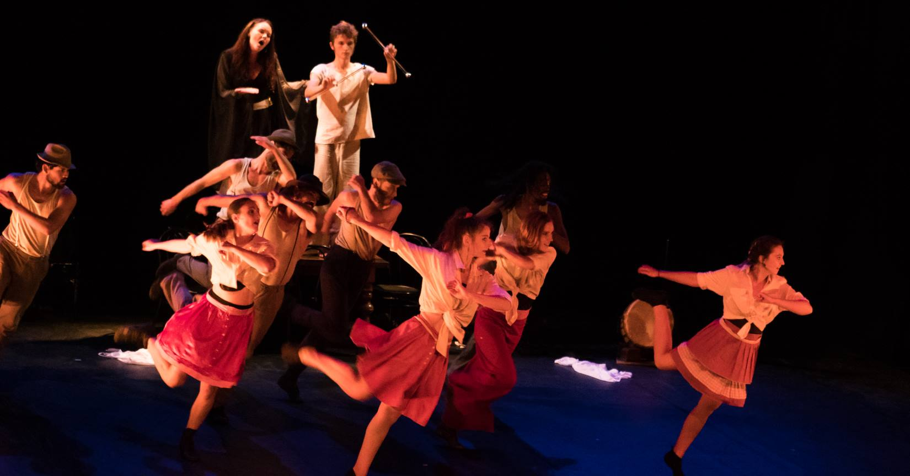
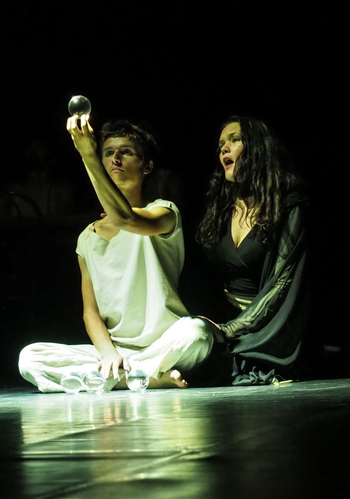

"Vive la vie!!!" est un spectacle relatant les transformations du mode de vie familial au cours du siècle passé et du début de ce siècle.
Un spectacle qui commence dans cette société paysanne figée, avec ses règles et ses codes relationnels et vestimentaires. Puis petit à petit, la technologie bouleverse les habitudes et les certitudes. Grâce aux découvertes scientifiques, et notamment à l'arrivée de l'électricité, de nouveaux modes de penser apparaissent. La certitude est alors que la technologie nous faciliterait tellement la vie qu'elle nous permettrait de mieux vivre ensemble. Pourtant, au fur et à mesure que les années passèrent, quelque chose ne tourna pas rond dans ce monde presque parfait.
Le spectacle :
Tout commence en 1900. Les relations hommes femmes ainsi que parents enfants sont décrites, la musique, les vêtements, les outils utilisés aussi. Puis tout s'accélère et nous arrivons 20 ans plus tard, dans un contexte de fin de première guerre mondiale, qui a fait bouger certains paradigmes. L'homme est devenu chaire à canon, la femme s'émancipe déjà, les enfants deviennent patrimoine d'état (car pour faire les guerres modernes, il faut beaucoup d'hommes beaucoup de chair à canon), la femme devient le symbole de la mère modèle qui doit amener ses enfants à maturité, elle est de moins en moins celle qui soutient son mari. Puis on saute encore 20 ans plus tard, et ainsi de suite... On voit évoluer les mentalités de génération en génération, ainsi que l'habillement, la musique, les enfants et les outils ménagers, libérant la femme de ses tâches, avec en fond cette vision de plus en plus forte que ce qui est scientifique est juste et bien. Et le monde s'accélère avec l'apparition de la radio, de la TV, l'intimité familiale disparaît, on se connecte sur des ordis et des Ipad. Chacun se libère de ses tâches fastidieuses, mais en même temps, au lieu d'utiliser ce nouveau temps pour la rencontre, on s'isole de plus en plus, pour à la fin ne plus qu'être colocataires les uns des autres. Apparaît enfin l'homme nouveau : l'être ordinateur qui prend tranquillement la place à l'être humain. L'être humain était celui qui utilisait son expérience, son savoir pour agir et interagir, l'être ordinateur est celui qui a abandonné son libre arbitre et son action à la science, qui se tourne vers elle dès que ça ne marche pas. Science technique, mais aussi science sociale, on vit par protocole, par manière de faire.
Finalement la science prend le dessus sur l'homme. C'est la science qui dit ce qui est réel ou ne l'est pas, et tant pis si ça n'a aucun lien avec la réalité. Vu que c'est scientifique, c'est forcément vrai. A la fin du spectacle on en viendra à nier ce que l'on voit et ce que l'on ressent, celui qui a appris est devenu la référence, en opposition à celui qui a vécu. La valeur de l'expérience, de l'amour, perd totalement de crédibilité. Aimer c'est être faible, manipulable. Contrairement à la science, qui elle repose sur des slogans. Et les gens continuent à souffrir, à mourir à petit feu, à voir l'être humain devenir froid et sans âme, juste un ordinateur qui répète inlassablement un schéma programmé à l intérieur. La trame du spectacle, c'est le combat entre deux mondes : celui de la modernité à tout prix et celui de l'amour, du lien à la nature, aux hommes, à la spiritualité.
Il y aura 2 versions de ce spectacle : La première prévue pour septembre 2017, centrée plus sur l'évolution des actions, des changements de manière de faire durant le XXème siècle, avec l'électricité comme leitmotiv, et la version de décembre 2017, qui elle se veut plus critique. Cette dernière évoquera la transformation de l'être humain en être ordinateur. Le nouvel homme promis par Nietzsche est arrivé. Le problème est qu'il n'est pas comme il l'a décrit.
L'homme est-il vraiment devenu un ordinateur? Ou peut-être que simplement, la science n'a pas les moyens de voir les transformations profondes des êtres?
Photos


